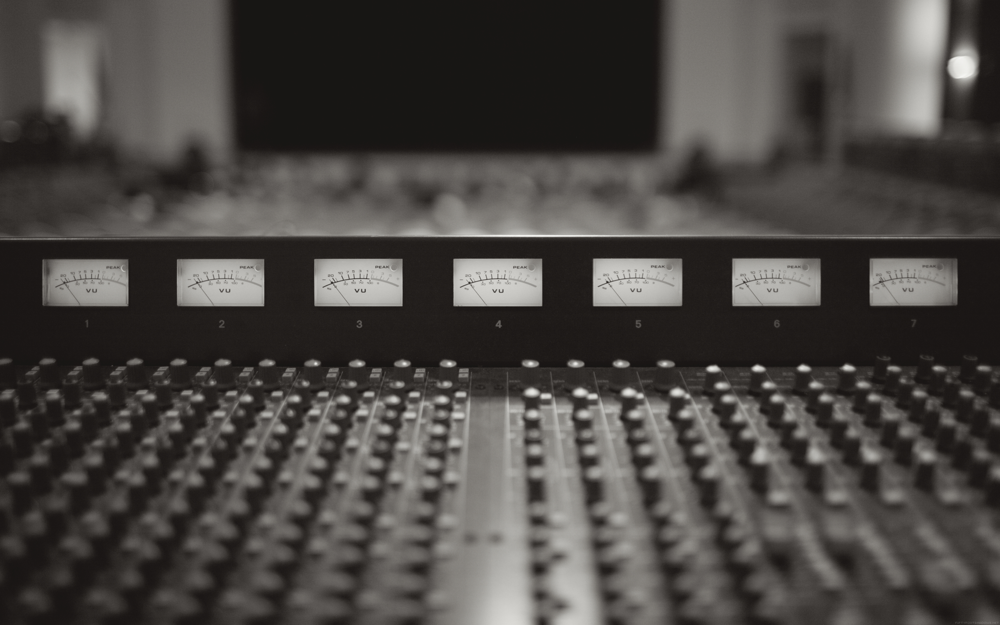
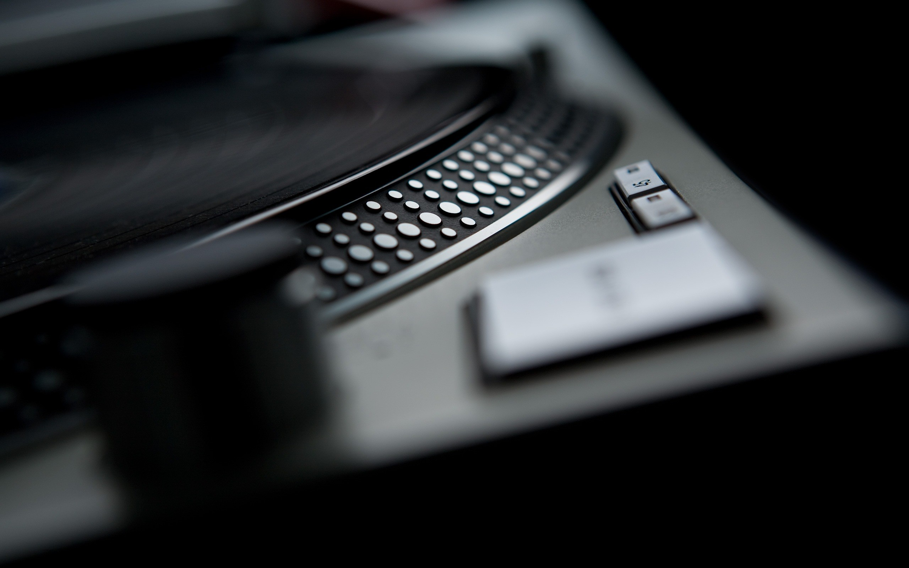

Nous offrons des services d'enregistrement de haute qualité pour les artistes de tous genres.
Notre studio est équipé de matériel de pointe pour garantir un son clair et professionnel.

Notre équipe de mixage expérimentée travaille avec vous pour créer un son équilibré et dynamique qui met en valeur votre musique.
Nous utilisons des techniques avancées pour assurer que chaque élément de votre piste brille.

Le mastering est la touche finale qui donne à votre musique une qualité sonore professionnelle.
Nous utilisons des outils de mastering de pointe pour optimiser le volume, la clarté et la cohérence de votre piste.

Notre équipe de producteurs talentueux collabore avec vous pour créer des beats, des arrangements et des compositions uniques qui correspondent à votre vision artistique.
Que vous soyez un artiste émergent ou établi, nous sommes là pour vous aider à donner vie à votre musique.